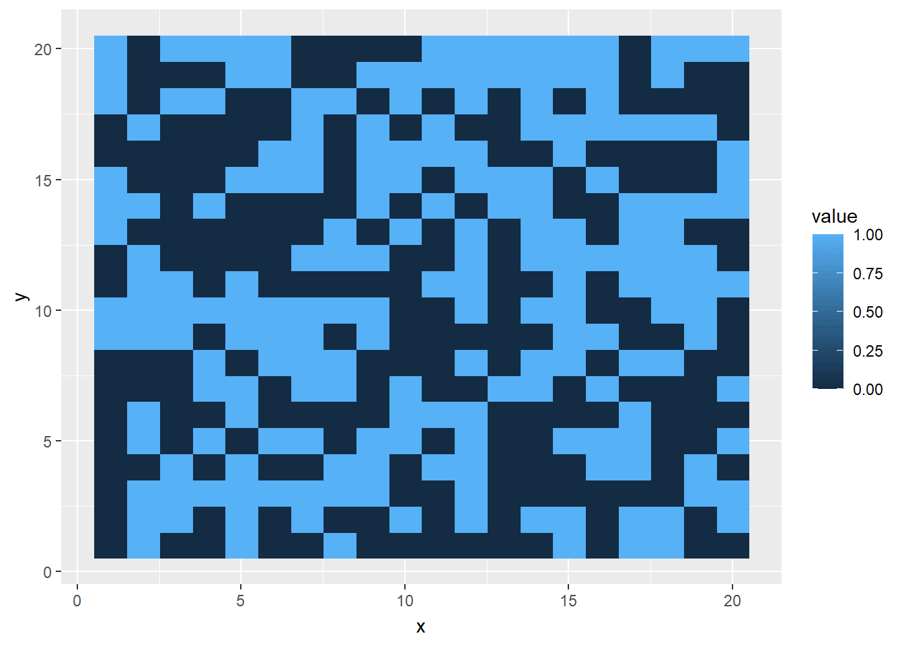

In this writeup, a I chose to explore a programming challenge that a family member mentioned to me - Conway’s game of life. This “game” is a cellular automation based on simple iteration of a set of rules. The initial state, in this simulation a random set of points, evolves via the rules over time.
Rules
Any cell with fewer than 2 live neighbors dies
Any live cell with two or three live neighbors lives
Any live cell with more than three live neighbors dies
Any dead cell with exactly three live neighbors becomes live
Rules condensed
Any live cell with two or three neighbors lives
Any dead cell with three live neighbors becomes live
All other cells die or remain dead
Implementation
I worked through two primary iterations of the Game of Life: the first based on for loops which are inherently slow in R and the second utilizing R’s strong suit of vectorized code. The brilliant implementation for the vectorized version I first saw here.
For loops Implementation
Steps
* Create a dataframe to store x and y coordinates including a third column of the cell’s state: 0 for dead or 1 for live. * Write a function to calculate next stage: iterates over each cell and count number of live neighbors to determine state. Applies rules to determine whether cell is alive or dead in next generation. * This implementation, since it uses for loops in R, is rather slow.
Code
library(tidyverse)
── Attaching core tidyverse packages ──────────────────────── tidyverse 2.0.0 ──
✔ dplyr 1.1.4 ✔ readr 2.1.4
✔ forcats 1.0.0 ✔ stringr 1.5.1
✔ ggplot2 3.4.4 ✔ tibble 3.2.1
✔ lubridate 1.9.3 ✔ tidyr 1.3.0
✔ purrr 1.0.2
── Conflicts ────────────────────────────────────────── tidyverse_conflicts() ──
✖ dplyr::filter() masks stats::filter()
✖ dplyr::lag() masks stats::lag()
ℹ Use the conflicted package (<http://conflicted.r-lib.org/>) to force all conflicts to become errors
Code
library(ggplot2)library(gganimate)grid <--10:10df1 <-expand.grid(x = grid, y = grid) %>%cbind(l =rbinom(length(grid) *length(grid), 1, .5), gen =1)make_generations <-function(generations =10, initial) { df <- initialfor (j in1:generations) { new <-data.frame(x =integer(), y =integer(), l =integer())for (i in1:nrow(df)) { li <- df[i,]$l xi <- df[i,]$x yi <- df[i,]$y ni <-filter(df, (x %in%c(xi-1, xi, xi+1)) & (y %in%c(yi-1, yi, yi+1))) %>%summarize(sum =sum(l))if (li ==1) { lnew <-ifelse((ni -1) %in%c(2,3), 1, 0) } else { lnew <-ifelse(ni ==3, 1, 0) } new <-add_row(new, x = xi, y = yi, l = lnew) } new$gen <- j initial <-rbind(initial, new) df <- new } initial}t1 <-Sys.time()test <-make_generations(10, df1)cat("Elapsed Time:", Sys.time() - t1, "seconds")
Elapsed Time: 8.691469 seconds
Code
p <-ggplot(test, aes(x, y, fill = l, color ="black")) +geom_raster()p +transition_manual(gen)
nframes and fps adjusted to match transition
Streamlined using R’s strong suit: Vectors
Vectorized Code Implementation
Steps
* Based on a matrix instead of a dataframe where each cell of the matrix stores a 0 or 1 to denote dead and alive cells. * Write a function to calculate next stage. * This new function copies the matrix 8 times shifting each iteration by including a row or column of zeros, effectively shifting each neighboring cell to the current cell. The number of 1’s (live cells) adjacent to a cell is then simply the sum of these 8 shifted matrices. * The result is returned as a long dataframe so it can be animated via gganimage::transition_states
p <-ggplot(test, aes(x, y, fill = value)) +geom_raster()p +transition_states(gen)

Shiny app
To expand on this challenge, I create a Shiny app that allows for additional flexibility in the simulation where a user can change the frame rate, size of the grid, colors of cells, and initial proportion of random live cells. The app can be found at Conway’s Game of Life